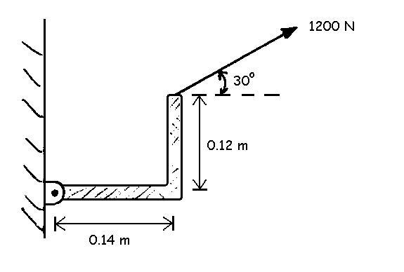
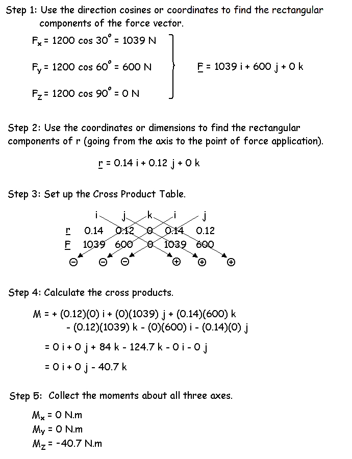

3-D Moments
In a previous lecture, we learned how a force can produce a moment of force which was the effectiveness of that force to produce rotation. We calculated the magnitude of the moment by multiplying the force by the moment arm. Since we were only considering two dimensions then, we could use simple trigonometry to yield the moment arm. In three dimensions, we need to be able to multiply vectors (cross products).
Vector Multiplication using Cross Products:
Let's start with a two dimensional example of a rigid angle bracket shown to the right. The 1200 N force does not pass through the axis and will cause rotation. We could calculate this moment by finding the moment arm using trigonometry but it is easier in this case to calculate the cross products.
M = r X F
where: M is the moment of force, F is the force vector, and r is the position vector going from the axis of rotation to the point of application of the force. Since both r and F are vectors, we will use the operators i, j, and k to designate the rectangular components in the X, Y, and Z directions, respectively.

Solution:
Since this was a two dimensional example, it should not be surprising that the moments about the X and Y axes were zero. This will not be the case in general when we look at 3-D problems.